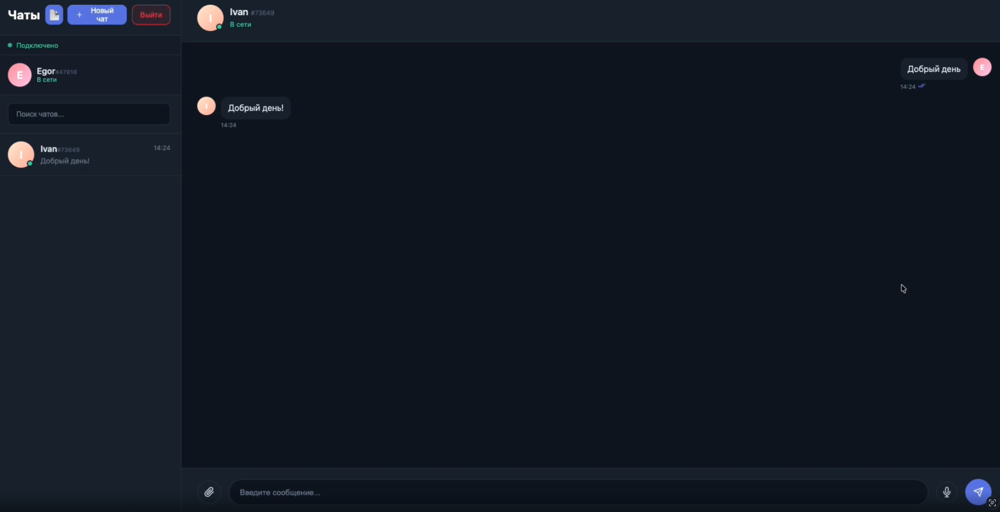
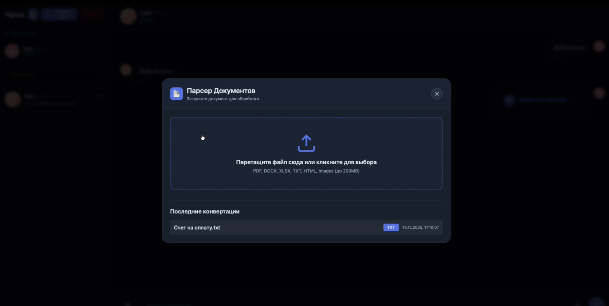
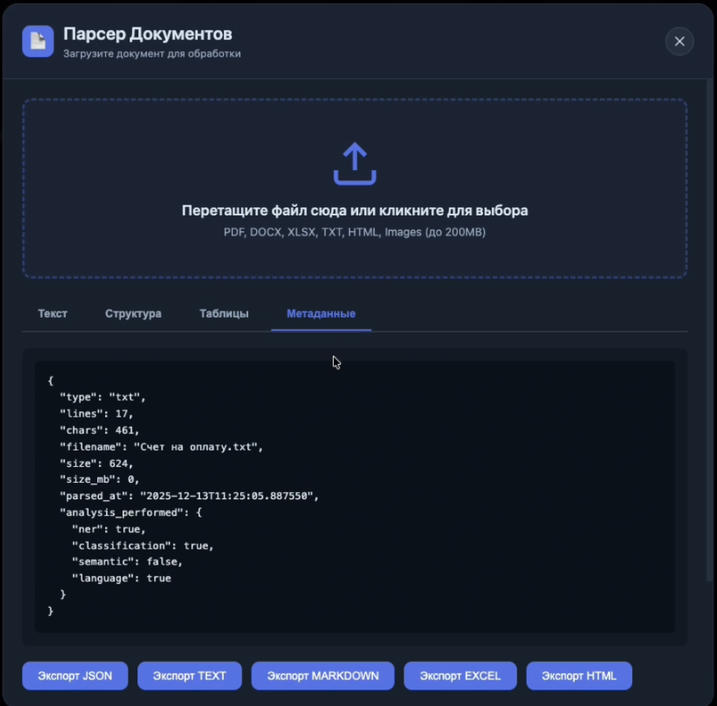
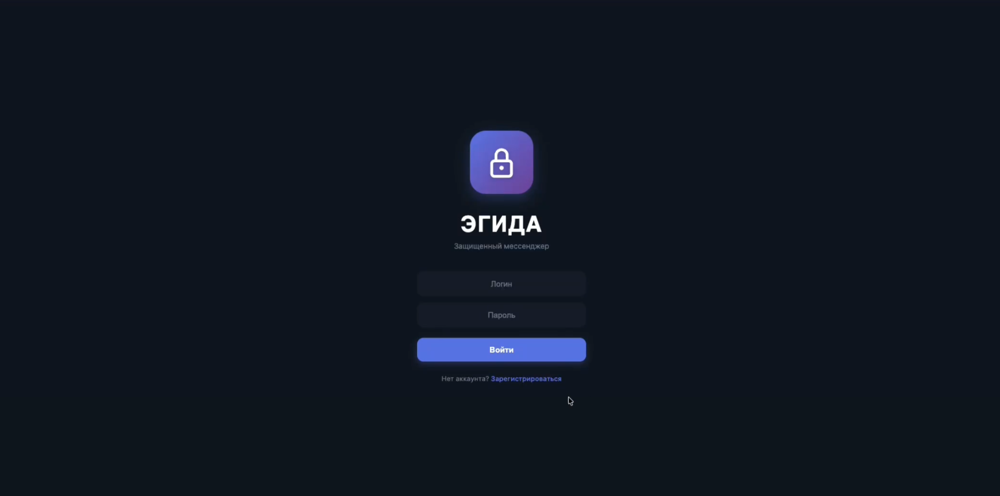

Корпоративный мессенджер для малых предприятий, который ещё и разбирает за вас счета и договоры.
Self-hosted замена WhatsApp и Telegram для рабочей переписки. Сообщения шифруются прямо в браузере. Прикреплённые PDF и Excel-документы автоматически разбираются — извлекаются ИНН, КПП, суммы, даты, номера договоров. Реквизиты появляются прямо в карточке сообщения.
Исходный код на GitHubКогда сотрудники пересылают сканы договоров и сметы через WhatsApp или Telegram, серверы которых находятся за пределами РФ, предприятие нарушает ФЗ-242 о локализации персональных данных. С 30 мая 2025 года штрафы за утечку ПД — от 3 до 15 миллионов рублей; при повторном нарушении — оборотный штраф от 25 до 500 миллионов.
Бухгалтер открывает PDF-счёт, ищет в нём ИНН, КПП, сумму, дату, номер договора и переносит всё в 1С или таблицу. На один документ — 5–10 минут. При 50 документах в месяц это около 25 часов рабочего времени, которое сотрудник мог бы потратить на что-то полезнее.
VK Teams и Яндекс 360 — от 249 ₽/мес за пользователя, без E2E и без on-premise. eXpress — от 300 ₽/мес и минимум 50 лицензий, без парсинга документов. Mattermost — open-source, но без сквозного шифрования в бесплатной версии и без парсинга.
crypto.subtle.deriveKey() вычисляет общий ключ AES-GCM-256. Каждое сообщение шифруется этим ключом с уникальным IV. Сервер видит только шифротекст. Поддерживаются голосовые сообщения, ответы на сообщения, статусы прочтения и поиск по переписке.
extractors прогоняет содержимое через регулярные выражения с проверкой контрольных сумм. На выходе — структурированный JSON с реквизитами.
Модуль extractors рассчитан на типовые российские деловые документы — счета-фактуры, акты выполненных работ, договоры, накладные. Правила настраиваются через JSON-конфигурацию: новый тип документа или новое поле добавляются без правок кода.
{
"document_type_hint": "invoice",
"document_numbers": ["145"],
"dates": ["2026-05-20"],
"inn": ["7727563778"],
"kpp": ["772701001"],
"ogrn": ["1057748916300"],
"bik": ["044525225"],
"bank_accounts": ["40702810500000004567"],
"amounts": [
{ "value": 150000.00, "currency": "RUB",
"raw": "150 000,00 руб." }
]
}
Обмен ключами — ECDH P-256 в браузере через нативный Web Crypto API. Из общего секрета производится ключ AES-GCM-256 — кэшируется в IndexedDB. Приватный ключ non-extractable: его не получится скопировать ни через DevTools, ни через вредоносный скрипт. Каждое сообщение — со своим 12-байтным IV. Долговременные ключи ротируются раз в 90 дней.
WebSocket-сервер на Node.js — до 500 одновременных подключений на VPS с 2 vCPU. p99-латентность доставки сообщения — 38 мс. Статусы прочтения, индикация набора текста, ответы на конкретное сообщение, редактирование, удаление и поиск по истории.
Запись голоса через MediaRecorder API с визуализацией осциллограммы. Поддерживаются картинки (JPEG, PNG, WebP), видео (MP4, WebM), аудио и документы до 50 МБ (лимит настраивается). Загруженные файлы доступны только участникам соответствующего чата по Bearer-токену.
PostgreSQL и Redis работают на том же VPS, что и backend. Никаких облачных сервисов. Резервное копирование — cron-задачей pg_dump. Дата-центр выбирает заказчик — требование о локализации ПД по ФЗ-242 закрывается автоматически.
bcrypt (фактор 10) для паролей, rate limiting (10 попыток входа за 15 минут с IP), параметризованные SQL-запросы, белый список расширений и валидация путей для защиты от path traversal, полный отказ от innerHTML на клиенте для архитектурной защиты от XSS.
≈15 700 строк кода в 93 файлах: backend на TypeScript, SPA на чистом TypeScript без фреймворков, микросервис парсинга на Python. Возможен независимый аудит безопасности и адаптация под индивидуальные требования. 25 unit-тестов покрывают модуль реквизитов, включая проверку контрольных сумм ФНС.




Гибридная архитектура: real-time-обмен сообщениями — на Node.js, парсинг документов — на Python. Изоляция позволяет ресурсоёмкому парсингу не блокировать доставку сообщений.
Решение рассчитано на коммерческие предприятия. Для государственных информационных систем требуется сертификат ФСТЭК; в этом случае AES-GCM-256 заменяется на отечественный «Кузнечик» через КриптоПро CSP — это направление развития, заявленное в дорожной карте.